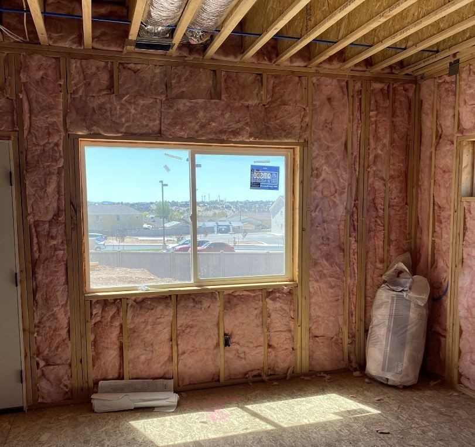

Attics hit 150 and stay there
Dark shingles in July sun push attic temperatures to 140 or 150 degrees by mid afternoon. If the insulation on your ceiling is thin or has settled flat, that heat is parked on your drywall until well after dark.
July afternoons here sit right around 100 degrees, and the attic over your head runs a lot hotter than that. We insulate and air seal Hurricane homes so your AC stops fighting a losing battle every afternoon.
Call before noon and we can usually get you a number the same day.

At about 3,200 feet, Hurricane sits in the low, hot corner of the state. The summer is long, the sun is direct, and the air is dry enough that nothing holds onto the cool overnight. That combination puts more load on your insulation than most of Utah ever sees. Here is what it actually does to a house out here.
Dark shingles in July sun push attic temperatures to 140 or 150 degrees by mid afternoon. If the insulation on your ceiling is thin or has settled flat, that heat is parked on your drywall until well after dark.
Most homes here run the supply ducts through the attic space. Cold air crossing a 150 degree attic loses part of what you already paid to cool it. Sealing and insulating the attic is the cheapest way to stop that.
A 102 degree afternoon can fall into the 60s overnight, and January mornings dip near freezing. Insulation here is not a summer problem or a winter problem. It works both directions, every day.
Most of the year is bone dry, then a monsoon cell parks over town in August and dumps an inch in an hour. Closed cell foam in the right spots keeps that moisture out of assemblies that would otherwise stay wet.
Same products you would find anywhere. The difference is where we put them and how thick, because the heat here comes from above and from the west.
The single highest return upgrade on most Hurricane houses. We bring the attic up to the R-38 Washington County asks for, with even depth across the whole lid, baffles keeping the soffit vents clear, and air sealing at the can lights, top plates and bath fans first so the new material is not just sitting over a pile of leaks.
Closed cell where you need air sealing and moisture control in a shallow space: vaulted roof decks, rim joists, cathedral ceilings, and sealed attics where the HVAC lives. Open cell for interior walls and sound. It is the right answer on a lot of homes out here, and the wrong one on some. We will tell you which.
Walls, floors, garage ceilings and the common wall on an attached garage, which in Hurricane can be 115 degrees in August with a car cooling off in it. Owens Corning, CertainTeed and Johns Manville.
Older homes around town still have the original 1980s and 90s attic material, matted down to half its rated depth. Rodents, roof leaks and smoke damage are the other three reasons to pull it. We vacuum it out, clean up, and reinsulate the same day where we can.
Insulation under the floor, rim joist sealing, and full encapsulation when the crawl needs to come inside the envelope.
Before you spend anything, we find out where the heat is actually getting in. Blower door test, thermal imaging, air leak detection, a look at your HVAC and a read through your power bills. Sometimes the answer is the attic. Sometimes it is a garage wall nobody ever insulated and a dozen unsealed penetrations.
Hurricane and the rest of Washington County sit in climate zone 3B, the hot dry one, so the ceiling number here is R-38. Drive an hour north to Cedar City and the same house needs R-49. These are the prescriptive numbers for a new build, and a fair benchmark for an older house you are trying to bring up to speed.
Plenty of homes built around here before 2010 are sitting at R-19 or R-30 in the attic. Getting to R-38 is usually a one day job.
Find out where your house stands| Assembly | R-value |
|---|---|
| Ceiling / attic | R-38 |
| Wood frame wall | R-20, or R-13 plus R-5 continuous |
| Floor over unconditioned space | R-19 |
| Crawl space wall | R-13, or R-5 continuous |
Prescriptive path, 2021 IECC as Utah amends it. Washington and Kane County are R-38 in the ceiling. Go north into Iron, Beaver or Garfield County and it jumps to R-49. Performance path compliance can get there a different way, so check the version on your permit.
Most people call us in late June, about three weeks after they started noticing. If any of these sound like your house, the attic is worth a look.
Book a free look


We work all over town and out through the rest of the valley. If you are somewhere between here and St. George, we cover it.
It comes down to square footage, what is up there now, and whether it has to come out first. A straight top-off on an average single story runs a lot less than a tear-out and reinstall on a two story with a complicated roof. We give you a flat number before anything starts, and the estimate is free, so there is no reason to guess from a blog post.
For most homes with the ductwork already run through a vented attic, blown-in to R-49 plus good air sealing gets you the most comfort per dollar. Spray foam on the underside of the roof deck makes more sense when you want to bring the attic inside the envelope, when you have a vaulted ceiling with no room for depth, or when the duct losses are bad enough to justify it. We will walk the attic and tell you which one your house wants.
Not always. If the existing material is dry, clean and evenly spread, we can usually blow right over it and count what is already there toward the final R-value. It has to come out if it is wet, if there is rodent contamination, or if there is smoke damage.
Most attic jobs are done in a day. A tear-out and reinstall usually still fits in one day, sometimes two on a larger house. Spray foam needs cure time before other trades get back in, and we will tell you exactly how long when we schedule.
On a house that is under-insulated right now, yes, and the comfort difference shows up first. Rooms stop being ten degrees apart and the AC stops running wide open all afternoon. Anyone who promises you an exact dollar figure is guessing, because it depends on your system, your windows and how you run the thermostat.
Yes, both, and every job carries a one-year workmanship warranty with manufacturer warranties available on the materials. The owner is on site for the work, not just the sales call.
Tell us a little about the house and we will come take a look. No charge, no pressure, and we can usually get you a number the same day you call.
Rather talk it through? (435) 592-0301